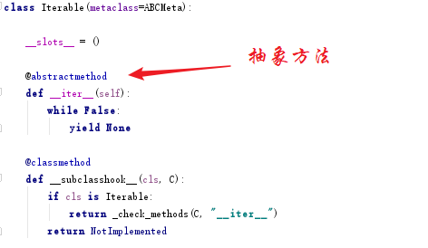
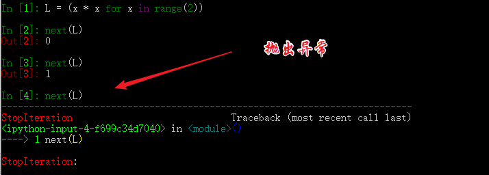

Python 并发编程（07）：从可迭代、迭代器、生成器到入门协程
从今天开始，我们将开始进入Python的难点，那就是协程。
为了写明白协程的知识点，我查阅了网上的很多相关资料。发现很难有一个讲得系统，讲得全面的文章，导致我们在学习的时候，往往半知半解，学完还是一脸懵逼。
学习协程的第一门课程，是要认识生成器，有了生成器的基础，才能更好地理解协程。
如果你是新手，那么你应该知道迭代器，对生成器应该是比较陌生的吧。没关系，看完这系列文章，你也能从小白成功过渡为Ptyhon高手。
1. 可迭代、迭代器、生成器
初学Python的时候，对于这三货真的是傻傻分不清。甚至还认为他们是等价的。
其实，他们是不一样的。
可迭代的对象，很好理解，我们很熟悉的：字符串，list，dict，tuple，deque等
为了验证我说的，需要借助collections.abc这个模块（Python2没有），使用isinstance()来类别一个对象是否是可迭代的（Iterable），是否是迭代器（Iterator），是否是生成器（Generator）。
这几个判断方法，在这里适用，但并不是绝对适用，原因见后面补充说明。
输出结果
从结果来看，这些可迭代对象都不是迭代器，也不是生成器。它们有一个共同点，就是它们都可以使用for来循环。这一点，大家都知道，我们就不去验证了。
关于可迭代对象，有几点需要补充说明
- 可以通过，
dir()方法查看，若有有__iter__说明是可迭代的，但是如果没有，也不能说明不可迭代，原因见第二条。 - 判断是否可迭代，不能仅看是否有
__iter__来草率决定，因为只实现了__getitem__方法的也有可能是可迭代的。因为当没有__iter__时， Python 解释器会去找__getitem__，尝试按顺序（从索引0开始）获取元素，不抛异常，即是可迭代。 - 所以，最好的判断方法应该是通过
for循环或者iter()去真实运行。

接下来是，迭代器。
对比可迭代对象，迭代器其实就只是多了一个函数而已。就是__next__()，我们可以不再使用for循环来间断获取元素值。而可以直接使用next()方法来实现。
迭代器，是在可迭代的基础上实现的。要创建一个迭代器，我们首先，得有一个可迭代对象。
现在就来看看，如何创建一个可迭代对象，并以可迭代对象为基础创建一个迭代器。
输出
如果上面的代码太多，也可以看这边，你更能理解。
补充说明:
- 迭代器，是其内部实现了，
__next__这个魔术方法。(Python3.x) - 可以通过，
dir()方法来查看是否有__next__来判断一个变量是否是迭代器的。
接下来，是我们的重点，生成器。
生成器的概念在 Python 2.2 中首次出现，之所以引入生成器，是为了实现一个在计算下一个值时不需要浪费空间的结构。
前面我们说，迭代器，是在可迭代的基础上，加了一个next()方法。
而生成器，则是在迭代器的基础上（可以用for循环，可以使用next()），再实现了yield。
yield 是什么东西呢，它相当于我们函数里的return。在每次next()，或者for遍历的时候，都会yield这里将新的值返回回去，并在这里阻塞，等待下一次的调用。正是由于这个机制，才使用生成器在Python编程中大放异彩。实现节省内存，实现异步编程。
如何创建一个生成器，主要有如下两种方法
- 使用列表生成式
- 实现yield的函数
可迭代对象和迭代器，是将所有的值都生成存放在内存中，而生成器则是需要元素才临时生成，节省时间，节省空间。
2. 如何运行/激活生成器
由于生成器并不是一次生成所有元素，而是一次一次的执行返回，那么如何刺激生成器执行(或者说激活)呢？
激活主要有两个方法
- 使用
next() - 使用
generator.send(None)
分别看下例子，你就知道了。
输出
3. 生成器的执行状态
生成器在其生命周期中，会有如下四个状态
GEN_CREATED# 等待开始执行
GEN_RUNNING# 解释器正在执行（只有在多线程应用中才能看到这个状态）
GEN_SUSPENDED# 在yield表达式处暂停
GEN_CLOSED# 执行结束
通过代码来感受一下，为了不增加代码理解难度，GEN_RUNNING这个状态，我就不举例了。有兴趣的同学，可以去尝试一下多线程。若有疑问，可在后台回复我。
输出
GEN_CREATED
0
GEN_SUSPENDED
1
GEN_CLOSED
4. 生成器的异常处理
在生成器工作过程中，若生成器不满足生成元素的条件，就会/应该 抛出异常（StopIteration）。
通过列表生成式构建的生成器，其内部已经自动帮我们实现了抛出异常这一步。不信我们来看一下。

所以我们在自己定义一个生成器的时候，我们也应该在不满足生成元素条件的时候，抛出异常。
拿上面的代码来修改一下。
5. 从生成器过渡到协程：yield
通过上面的介绍，我们知道生成器为我们引入了暂停函数执行（yield）的功能。当有了暂停的功能之后，人们就想能不能在生成器暂停的时候向其发送一点东西（其实上面也有提及：send(None)）。这种向暂停的生成器发送信息的功能通过 PEP 342 进入 Python 2.5 中，并催生了 Python 中协程的诞生。根据 wikipedia 中的定义
协程是为非抢占式多任务产生子程序的计算机程序组件，协程允许不同入口点在不同位置暂停或开始执行程序。
注意从本质上而言，协程并不属于语言中的概念，而是编程模型上的概念。
协程和线程，有相似点，多个协程之间和线程一样，只会交叉串行执行；也有不同点，线程之间要频繁进行切换，加锁，解锁，从复杂度和效率来看，和协程相比，这确是一个痛点。协程通过使用 yield 暂停生成器，可以将程序的执行流程交给其他的子程序，从而实现不同子程序的之间的交替执行。
下面通过一个简明的演示来看看，如何向生成器中发送消息。
输出。
0
2
3
2
这里解释下为什么这么输出。
重点是jump = yield index这个语句。
分成两部分：
yield index是将indexreturn给外部调用程序。jump = yield可以接收外部程序通过send()发送的信息，并赋值给jump
以上这些，都是讲协程并发的基础必备知识，请一定要亲自去实践并理解它，不然后面的内容，将会变得枯燥无味，晦涩难懂。
下一章，我将讲一个Python3.5新引入的语法：yield from。篇幅也比较多，所以就单独拿出来讲。